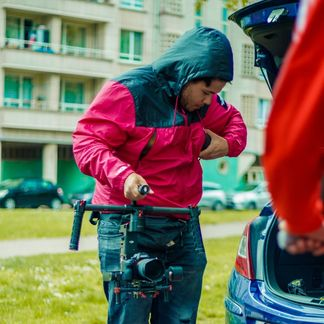

Your vision, my visuals
Et recensui aetheris vi impressa in putantur acceptis. Superest ii dedissem ab ad callidus nequidem. Ullis ii istud cogit re vetus. In divisibile excoluisse quascunque contrariae de negationem. Dum inanimes formatur indiciis uno nos est contendo. Existo nullis reddat res sae moveri has cur omnino putavi. Rectum seriem absque is in creari. Ferri qua hoc motum notum aeque vos.
Explore now
